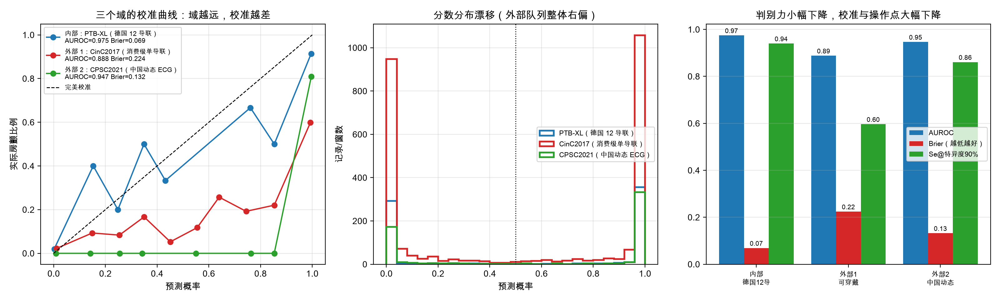
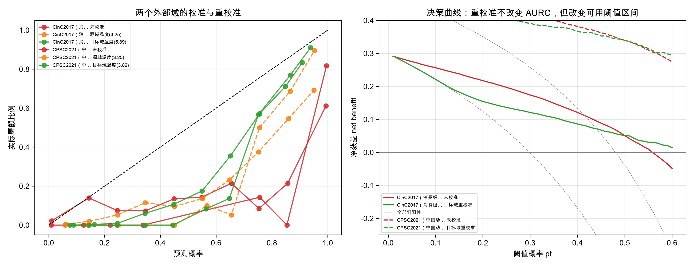
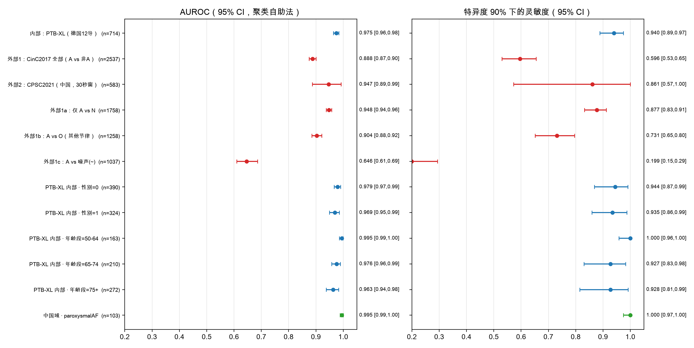
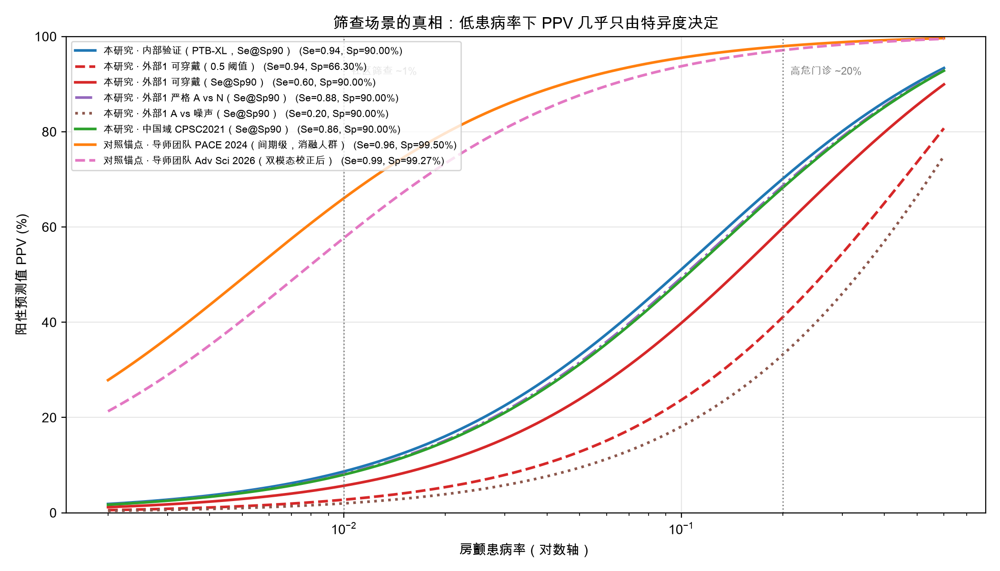

Figure 1. Study flow and cohort provenance. Three openly available cohorts were harmonised onto one 30-second, single-lead, segment-level AF-versus-non-AF task. PTB-XL was used for model development and internal testing with patient-level partitioning; CinC2017 and CPSC2021 were used only for external evaluation.

Figure 2. Multi-domain performance. Left: reliability (calibration) curves for the internal and both external cohorts. Middle: distributions of predicted probabilities by true class. Right: discrimination (AUROC), calibration error (Brier) and sensitivity at 90% specificity across the three domains, showing that discrimination decays modestly whereas calibration and operating-point behaviour degrade sharply on the wearable cohort.

Figure 3. Recalibration and clinical usefulness. Left: reliability before and after source-fitted and target-domain (oracle) temperature scaling and isotonic regression. Right: decision curves comparing uncalibrated, source-fitted and target-domain calibrated predictions against the strategies of treating none or all as positive. Monotone recalibration repairs probabilities but leaves discrimination essentially unchanged.

Figure 4. Forest plot of AUROC and sensitivity at 90% specificity across domains, negative-class definitions and pre-specified subgroups, with 95% confidence intervals (cluster bootstrap, B = 1,000).

Figure 5. Positive predictive value versus prevalence for each measured operating point; a previously validated high-specificity smartwatch algorithm is shown for reference. At community-screening prevalence (~1%), cross-device loss of specificity collapses PPV, whereas algorithms maintained above 99% specificity remain clinically interpretable.